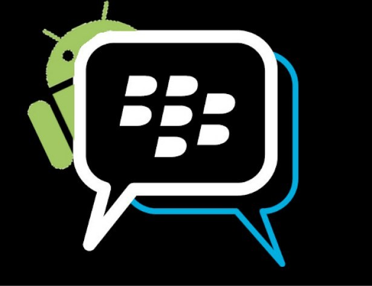

Development on Blackberry 10
Quick Introduction
Created by Hooman Ostovari / @hoomi_2010
Let's start with a bit of bad news!!!
Native developement is done on C++
Sorry! You have to rewrite your BB7 applications from Java to C++:(
More opportunities to develop an application
-
Qt/qml
-
Pure C++
-
HTML5/Javascript/CSS3
-
Adobe AIR
And

Yes!!! You can now port your existing Android apk to BB10
Qt/QML
-
QML for the UI
-
Qt framework which is cross-platform
-
IDE is Eclipse based
-
Possibly to attract Symbian develoeprs?
Pure C++
-
Open GL
-
iOS porting possible
-
Microsoft Visual Studio plugin
HTML5/Javascript/CSS3
-
PhoneGap/Cordova
-
Native extension to access native APIs
-
WebGL is supported
-
Webworks SDK is open source
Android Runtime
-
Online tool to convert the apk to bar
-
Eclipse plugin to directly compile bar from Android code
-
Only support Gingerbread APIs (10.2 will support Jelly Beans)
-
Not all the libraries are supported
Adobe AIR
-
I do not have much to say !!! :)
-
Native Extensions
THANK YOU
by: Hooman Ostovari